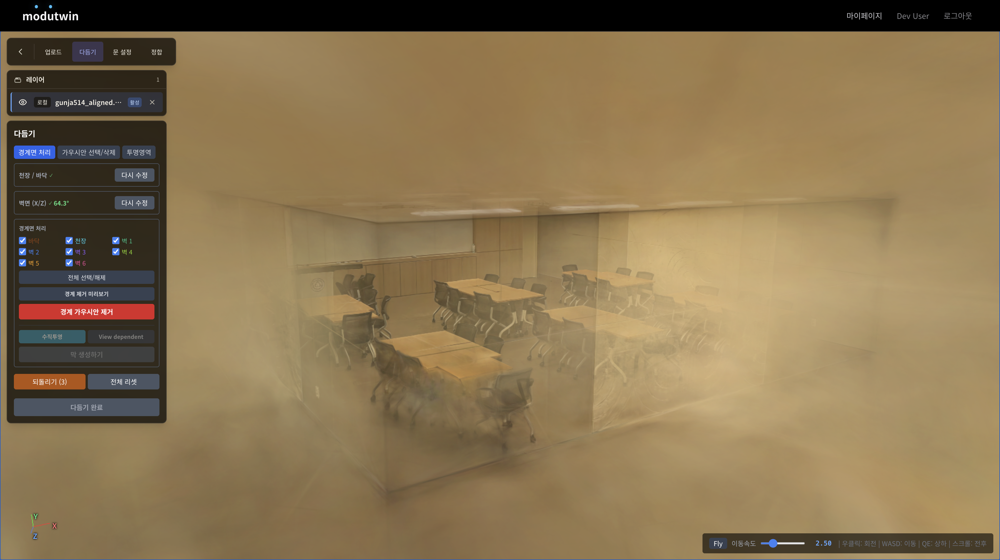
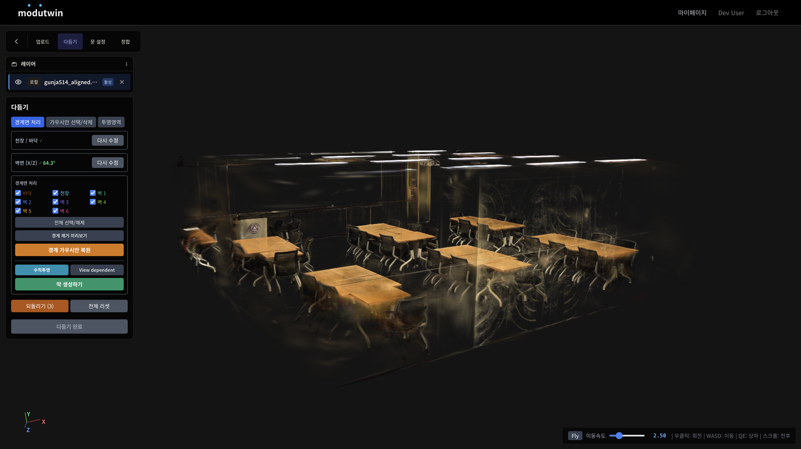
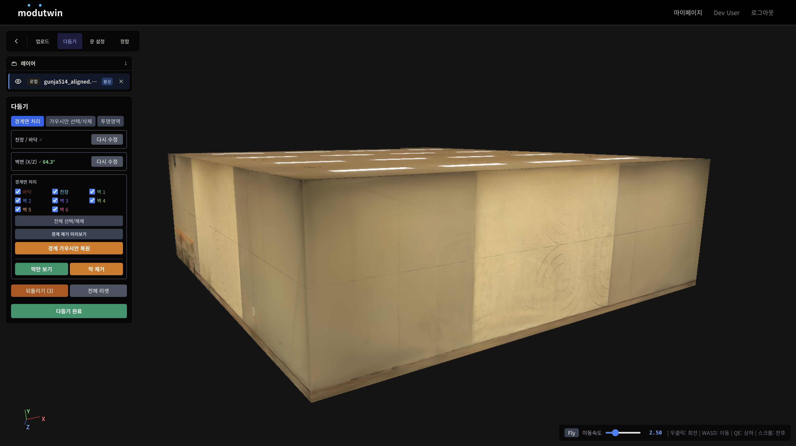
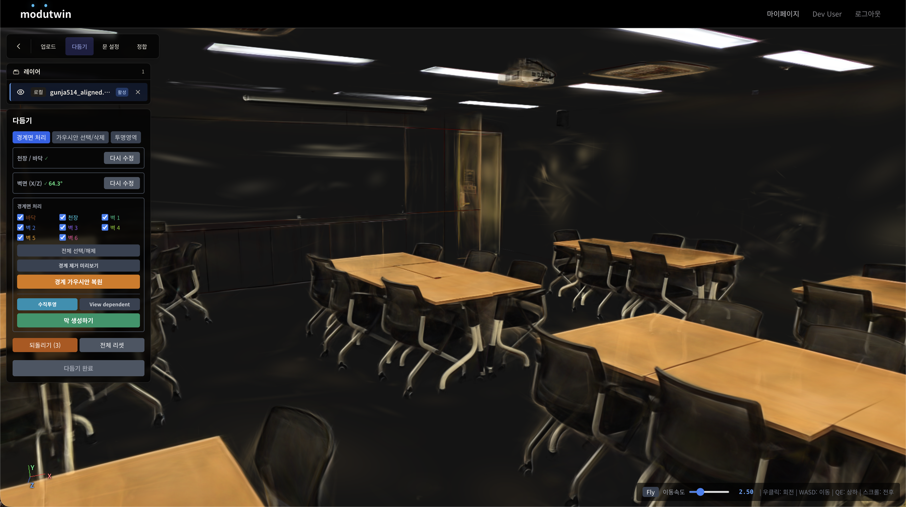
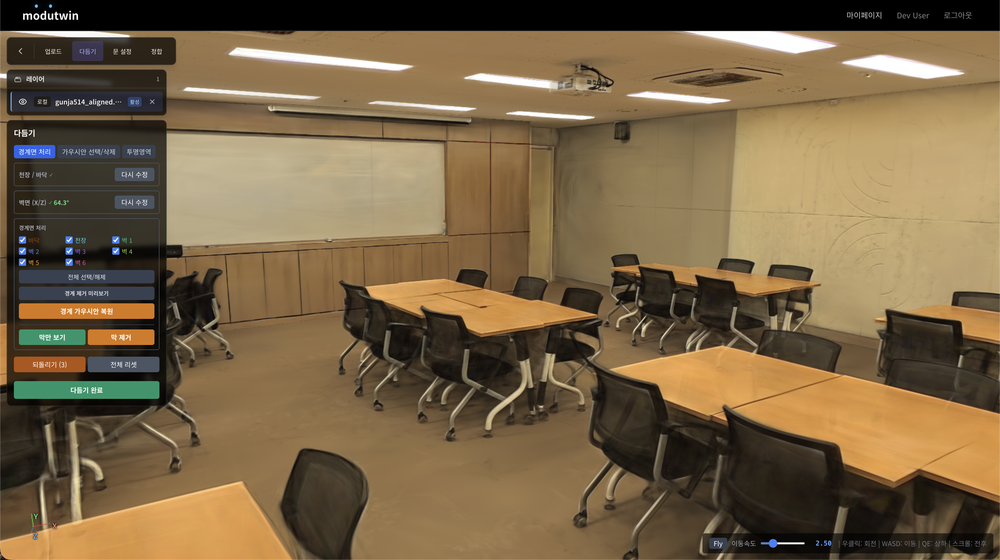
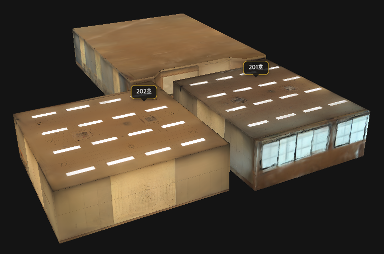
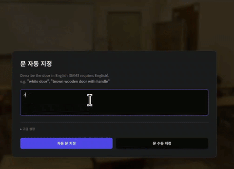
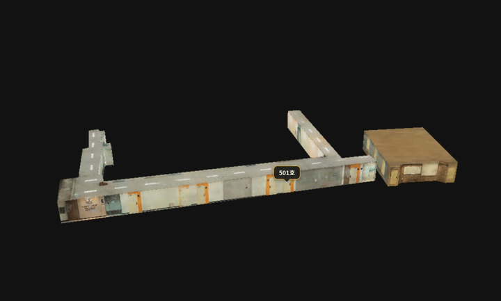
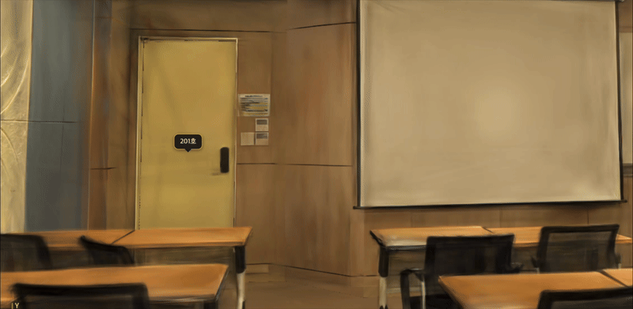

3DGS Asset Refinement
Remove outer Gaussians and generate boundary meshes to prevent module overlap.
KCGS 2026 Project Page
Modular Indoor Digital Twins via Door-Based Alignment of 3D Gaussian Splatting Assets
Modutwin is a web platform for building indoor digital twins from independently captured 3D Gaussian Splatting assets. The system refines room-level splats, extracts door geometry, aligns modules to a shared basemap through door-based registration, and preserves interactive door assets in the final composed scene.
Pipeline
Remove outer Gaussians and generate boundary meshes to prevent module overlap.
Use SAM3-assisted detection to obtain door corner constraints for registration.
Estimate transforms that attach room modules to the corridor basemap through doors.
Keep door assets grouped so the final digital twin supports open and close motion.
Core Features
Indoor assets may include geometry outside the intended room boundary. Refinement removes boundary-crossing Gaussians while preserving the visible appearance of each captured space.








After refinement, room modules can be composed without visible boundary conflicts, making the scene easier to inspect and edit in the platform.



Evaluation
| Asset | PSNR ↑ | SSIM ↑ | LPIPS ↓ |
|---|---|---|---|
| Asset 1 | 31.85 dB | 0.9759 | 0.0540 |
| Asset 2 | 30.48 dB | 0.9705 | 0.0699 |
| Asset 3 | 29.54 dB | 0.9693 | 0.0584 |
| Asset 4 | 31.24 dB | 0.9476 | 0.0384 |
| Average | 30.78 dB | 0.9658 | 0.0552 |
Future Work
Future development targets PointNet++-based boundary inference for ceiling, floor, and wall surfaces directly from Gaussian point clouds.